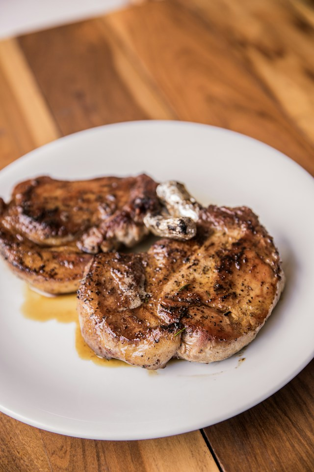

Home
Honey Garlic Pork Chops
Honey Garlic Pork Chops

Description
These honey garlic pork chops are juicy, savory, and coated in a sticky homemade sauce with the perfect balance of sweetness, garlic, and a little tang. They come together quickly in one skillet and have enough flavor to feel like more than just another simple weeknight dinner.
- 4 boneless pork chops, about 1 inch thick
- 1 Tbsp olive oil
- 2 Tbsp butter
- 4 cloves garlic, minced
- ¼ cup honey
- 3 Tbsp soy sauce
- 1 Tbsp apple cider vinegar
- 1 Tsp Dijon mustard
- ½ Tsp smoked paprika
- ½ Tsp garlic powder
- Salt, to taste
- Pepper, to taste
- 1 Tbsp fresh parsley, chopped
- Pat the pork chops dry with paper towels and season both sides with smoked paprika, garlic powder, salt and pepper.
- Heat olive oil in a large skillet over medium-high heat.
- Add the pork chops and cook for about 3-4 minutes per side, until nicely browned. Remove them from the skillet and set aside.
- Reduce the heat to medium and add the butter and minced garlic. Cook for about 30 seconds, stirring constantly so the garlic does not burn.
- Add the honey, soy sauce, apple cider vinegar and Dijon mustard. Stir until everything is well combined.
- Let the sauce simmer for 2-3 minutes, stirring occasionally, until it begins to thicken slightly.
- Return the pork chops to the skillet and spoon the sauce over the top.
- Continue cooking for another 3-5 minutes, flipping the pork chops once and coating both sides with the sauce, until the pork reaches an internal temperature of 145°F.
- Remove the skillet from the heat and let the pork chops rest for about 3 minutes.
- Spoon the remaining honey garlic sauce over the pork chops and sprinkle with fresh parsley before serving.